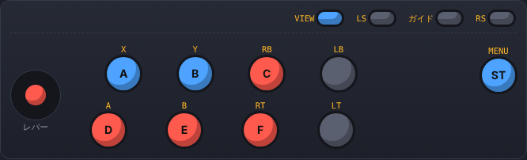
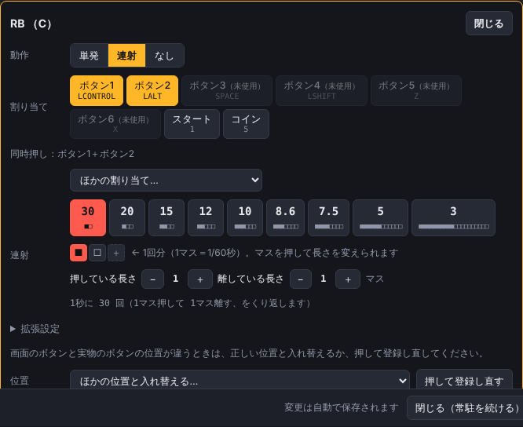

連射パネル設定（ShotPanel）
MAME用の、パッド・アケコンの連射とボタン割り当てのソフトです（Windows 10／11）。パッドの入力を読み取って、連射・ボタンの入れ替えをしてから、キーボードの入力としてMAMEに送ります。インストールは不要です。
▶ 最新版をダウンロード読み込み中…
使い方
はじめに
- zip を展開して、フォルダごと好きな場所に置き、ShotPanel.exe を起動します。初回は「WindowsによってPCが保護されました」と出ることがあります。「詳細情報」→「実行」で起動できます。設定は同じフォルダの
shotpanel.jsonに自動で保存されます。 - 画面下の「MAMEの設定」でMAMEのフォルダを指定し、見つかった mame.ini の「このソフト用に書き換える」を押します（joystick 0、新しいMAMEは keyboardprovider dinput になります。元のファイルは残るので「元に戻す」で戻せます）。MAMEは閉じた状態で行ってください。
- 「キーボードの設定」を開いて「MAMEに書き込む」を押します。このソフトが送るキーを、MAMEの
cfg\default.cfgに書き込んで合わせます（MAMEの初期設定では2Pのボタン6にキーが無いため、この操作が必要です）。 - つないだコントローラーが自動で出てきます。1P／2P／無効を選び、画面のボタンの位置が実物と違うときは「ボタン位置を登録」で合わせます。
- 「配置パターンを選ぶ」から 2B-1 などを選びます。画面のボタンを押すと、そのボタンだけ個別に変えられます。
- ×で閉じても終了しません。通知領域（右下）のアイコンで常駐し続けます。右クリックで「設定を開く／一時停止／終了」ができます。


ゲームごとの設定
- MAMEでゲームを起動すると、ウィンドウのタイトルからROM名を読み取ります。専用の設定が無いゲームは「共通設定」で動きます。上に出る「○○ 専用の設定を作る」で、そのゲーム専用になります。
- 「ほかの設定を読み込む」で、別のゲームの設定をコピーできます。
- アナログ操作のゲームは「このゲームはMAMEにパッドを直接読ませる」をオンにすると、そのゲームではこのソフトは何もせず、MAMEがパッドを直接読みます。
必要なもの・注意
- Windows 10／11（64bit）と Microsoft Edge WebView2 ランタイム（Windows 11 と、更新済みの Windows 10 には入っています）。
- アケコン本体の連射スイッチなど、本体の中だけで処理されるものは読み取れません。アナログの値（倒した量）は送れず、上下左右としてだけ使えます。
- MAMEUIの画面だけが開いている状態は「起動中」と判定できません。mame.ini や default.cfg を書き換えるときは MAMEUI も閉じてください。
- 連射はMAMEのフレームと完全には同期しません。30発/秒で取りこぼすゲームがあれば、20か15に下げてください。
最新版
読み込み中…
更新履歴
このソフトは非公式で、MAME の開発チームとは関係ありません。各 zip にはソースコード（source.zip）も入っています。